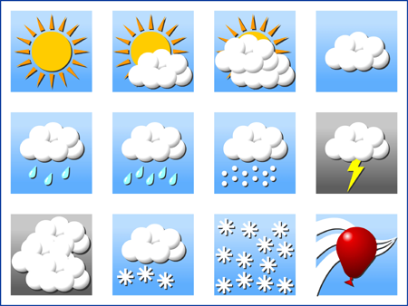

libradolan

webtecc, DWD radolan file library
Main Page
Classes
Files
Class List
Class Index
Class Members
All
Functions
Variables
b
c
d
f
g
h
i
m
n
p
q
r
s
t
Here is a list of all documented class members with links to the class documentation for each member:
- b -
binaryFormat :
RDRadolanHeader
- c -
cartesianCoordinate() :
Radolan::RDCoordinateSystem
- d -
data :
RDScan
dbZPerUnit :
RDScan
deg() :
Radolan::RDCoordinateSystem
dimLat :
RDScan
dimLon :
RDScan
- f -
filename :
RDScan
- g -
geographicalCoordinate() :
Radolan::RDCoordinateSystem
geographicalCoordinateRad() :
Radolan::RDCoordinateSystem
geographicalPolygonForGridpoint() :
Radolan::RDCoordinateSystem
gridPoint() :
Radolan::RDCoordinateSystem
- h -
header :
RDScan
headerSize :
RDRadolanHeader
- i -
intervalDuration :
RDRadolanHeader
- m -
max_value :
RDScan
min_value :
RDScan
- n -
numberOfRadarStations :
RDRadolanHeader
- p -
payloadSize :
RDRadolanHeader
polarStereographicScalingFactor() :
Radolan::RDCoordinateSystem
precision :
RDRadolanHeader
predictionMinutes :
RDRadolanHeader
- q -
quantification :
RDRadolanHeader
- r -
rad() :
Radolan::RDCoordinateSystem
radarFormat :
RDRadolanHeader
radarLocation :
RDRadolanHeader
radarStations :
RDRadolanHeader
RDQuadrant() :
Radolan::RDCoordinateSystem
resolution :
RDRadolanHeader
- s -
scanType :
RDRadolanHeader
setScanType() :
Radolan::RDCoordinateSystem
softwareVersion :
RDRadolanHeader
- t -
toDeg() :
Radolan::RDCoordinateSystem
toRad() :
Radolan::RDCoordinateSystem
© webtecc, Ferenc Kahlesz
Documentation generated on Wed Oct 8 2014 13:17:16 by
1.8.2